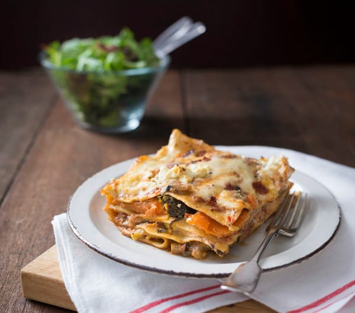

Classic Bolognese Lasagna
The classic lasagne comes from northern Italy, more precisely from the Emilia Romagna region, and is prepared with bechamel sauce, Bolognese ragout and fine parmesan. Our lasagne recipe also includes creamy mozzarella.
Expense
80 Min.Difficulty
Medium
 200 g
onions, 2 cloves of garlic
200 g
onions, 2 cloves of garlic